Building Nano Services
with OSGi Declarative Services
created by Dirk Fauth and Peter Kirschner Know-How inside Powerpoint Presentation
EclipseCon Europe 2016
Schubartsaal
October 25, 2016 - 09:00 to 12:00
PDE - create project for Service API
- select from menu:
File -> New -> Plug-in Project - provide as Project name:
examples.pde.service.api
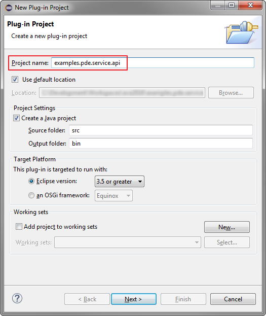
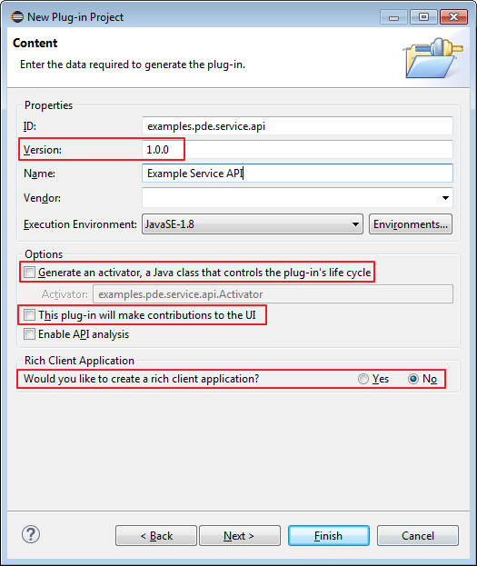
PDE - create API interface package
copy the following snippet and paste it into src folder
package examples.service.api;
public interface StringModifier {
String modify(String input);
}
PDE - export the API package
Inside the Manifest Editor on the Runtime Tab
export the package with version 1.0.0
PDE - Service API Bundle Manifest
You successfully created the Service API Bundle if your MANIFEST.MF look like this.
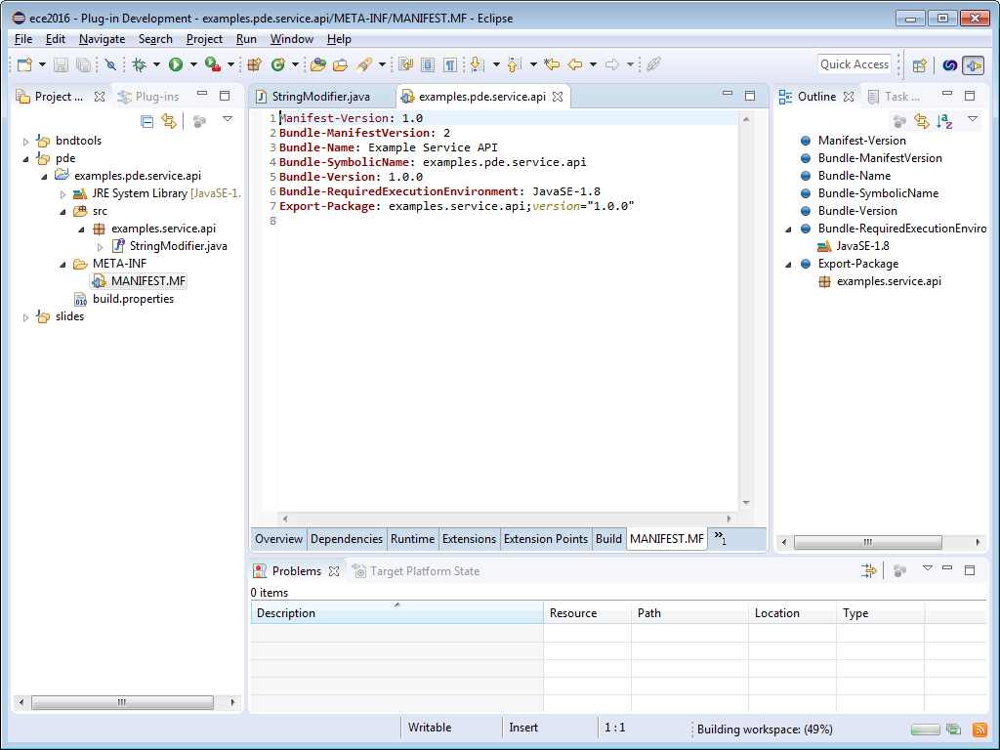PDE - create project for Service Implementation
- select from menu:
File -> New -> Plug-in Project - Project name:
examples.pde.impl.inverter
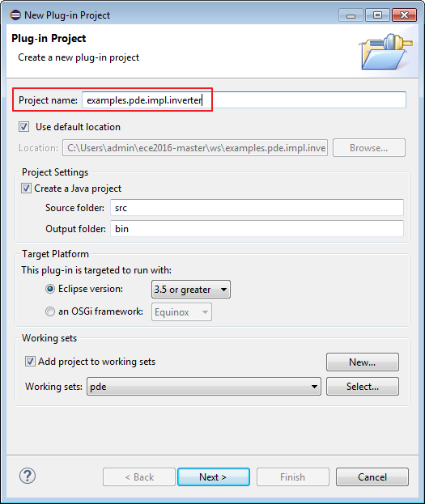
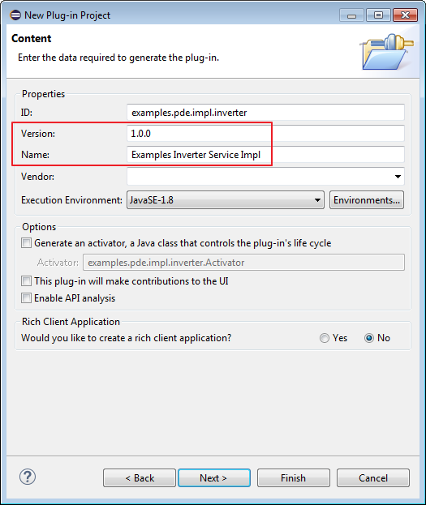
PDE - define dependencies / build path
- Import package:
examples.service.api - Specify the upper bound version:
2.0.0 - Import package:
org.osgi.service.component.annotations - Specify resolution:
optional
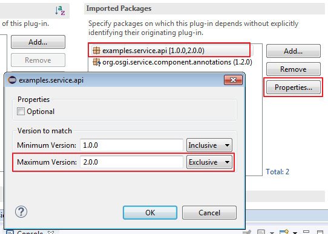
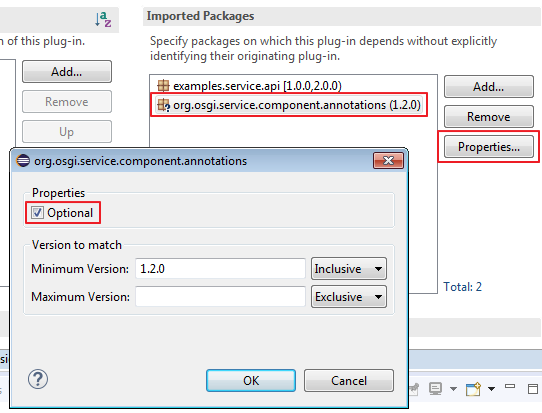
PDE - define dependencies / build path
-
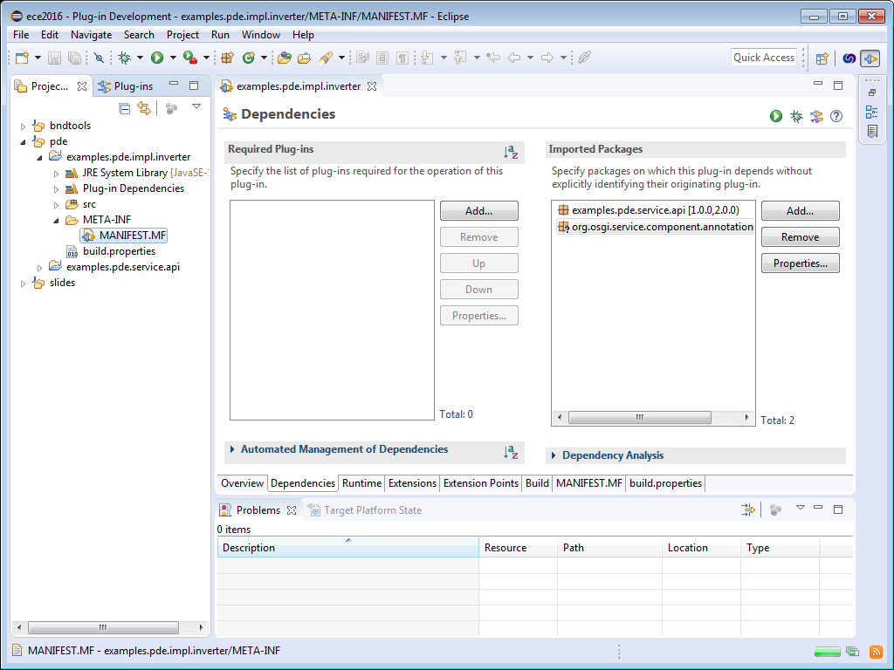
PDE - create implementation
- copy the following snippet and paste it into src folder
package examples.pde.impl.inverter;
import org.osgi.service.component.annotations.Component;
import examples.service.api.StringModifier;
@Component
public class StringInverterImpl implements StringModifier {
@Override
public String modify(String input) {
return new StringBuilder(input).reverse().toString();
}
}
PDE - Implementation Bundle
You successfully created the Impl Bundle if look like this.
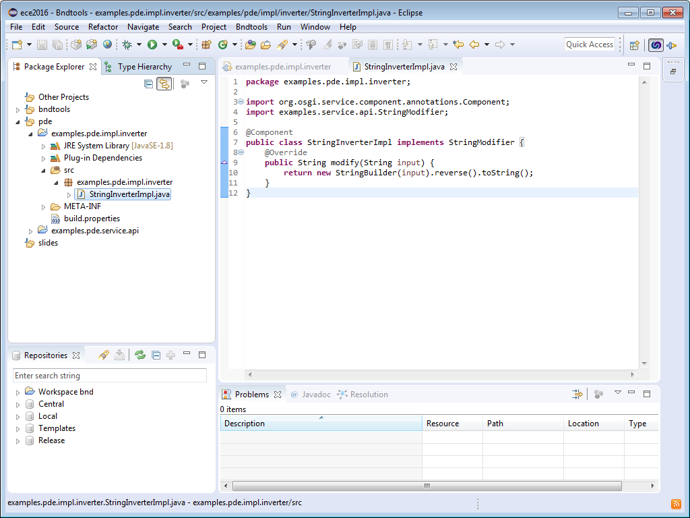 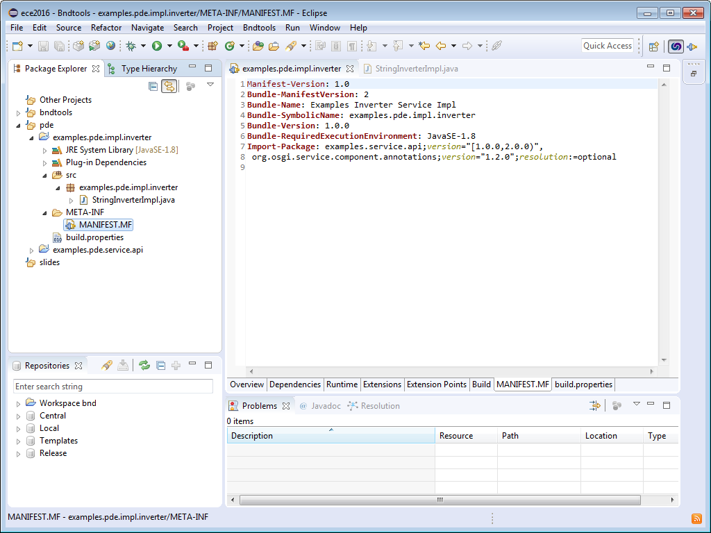PDE - create project for the consumer
- select from menu:
File -> New -> Plug-in Project - Project name:
examples.pde.command
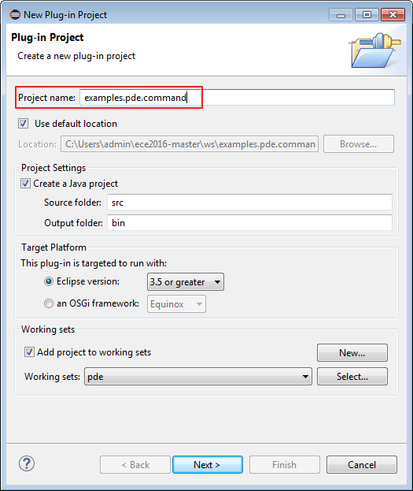
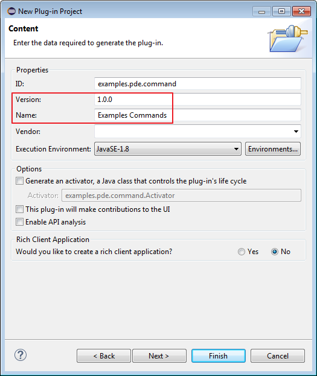
PDE - define dependencies / build path
- Import package:
examples.service.api - Specify the upper bound version:
2.0.0 - Import package:
org.osgi.service.component.annotations - Specify resolution:
optional
PDE - define dependencies / build path
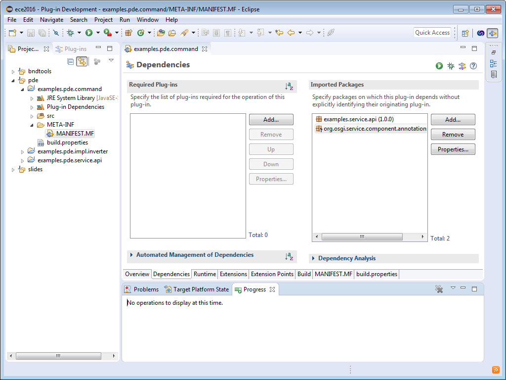PDE - create consumer command
copy the following snippet and paste it into src folder
package examples.pde.command;
import org.osgi.service.component.annotations.*;
import examples.service.api.StringModifier;
@Component(
property = {
"osgi.command.scope" + "=zExampleModifier",
"osgi.command.function" + "=modify" },
service = StringModifierCommand.class
)
public class StringModifierCommand {
private StringModifier modifier;
@Reference
void bindStringModifier(StringModifier modifier) {
this.modifier = modifier;
}
public void modify(String message) {
System.out.println(modifier.modify(message));
}
}
PDE - @Reference - Event Strategy
update the StringModifierCommand
@Reference
void bindStringModifier(StringModifier modifier) {
this.modifier = modifier;
}
void updatedStringModifier(StringModifier modifier, Map<String, ?> properties) {
properties.forEach((k,v) -> {System.out.println(k + " : " + v);} );
}
void unbindStringModifier(StringModifier modifier) {
this.modifier = null;
}
public void modify(String message) {
System.out.println(modifier.modify(message));
}
PDE - create launch configuration 1/3
- select from menu:
Run -> Run configurations ... - right-click OSGi Framework, select New and specify name
simple_runtime - select the Default Auto-Start: true
- remove all and then select only the following bundles
bundle purpose examples.pde.command application service consumer examples.pde.impl.inverter application service implementation examples.pde.service.api application service api org.apache.felix.gogo.command OSGi console commands org.apache.felix.gogo.runtime OSGi console runtime org.apache.felix.gogo.shell OSGi console shell
PDE - create launch configuration 2/3
- additionally add the following bundles
bundle purpose org.eclipse.equinox.console Equinox OSGi console org.eclipse.equinox.ds Equinox Declarative Services org.eclipse.equinox.util Equinox Util bundle org.eclipse.osgi Equinox OSGi runtime org.eclipse.osgi.services Equinox OSGi service interfaces
PDE - create launch configuration 3/3

PDE - execute launch configuration
- launch the
simple_runtime - enter in the console view
modify example
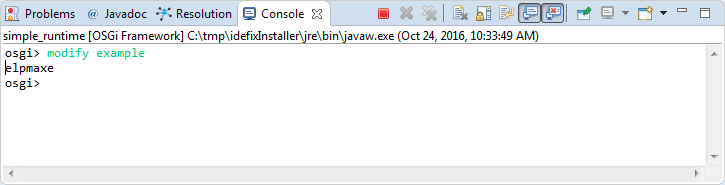
PDE - Export application bundles
- export bundles via menu
File -> Export ... -> Plug-in Development -> Deployable plug-ins and fragments - select all
examples.pde.* - provide directory
C:\ece2016\equinox_oxygen_runtime
PDE - Launch standalone runtime
- open a cmd/shell window inside
C:\ece2016\equinox_oxygen_runtime - launch start.[cmd|sh]
- type in the console
modify example
bndtools - create workspace
select from menu:
File -> New -> Bnd OSGi Workspace
GitHub -> bndtools/workspace
bndtools - verify workspace
The Repositories view contains entries, as shown below.

bndtools - create API project and interface package
File -> New -> Bnd OSGi ProjectSelect API Project 3.3.0- Project Name:
examples.bndtools.service.api - Java Package:
examples.service.api
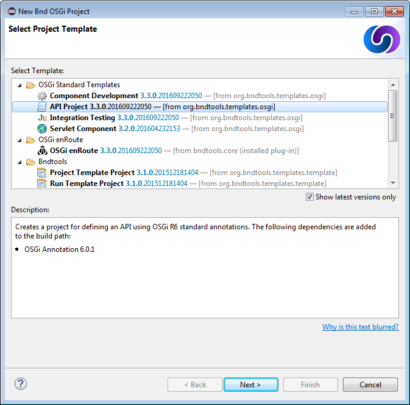
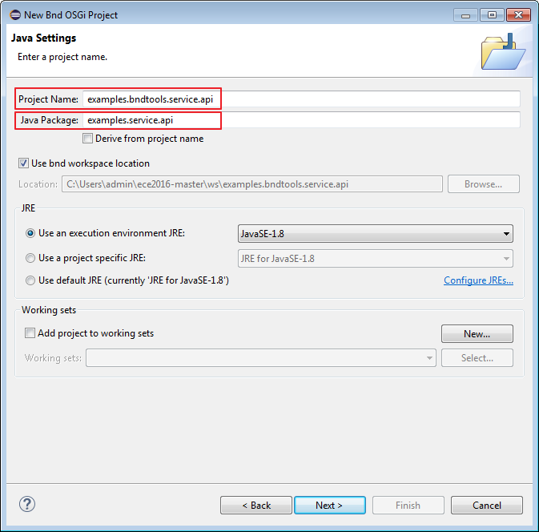
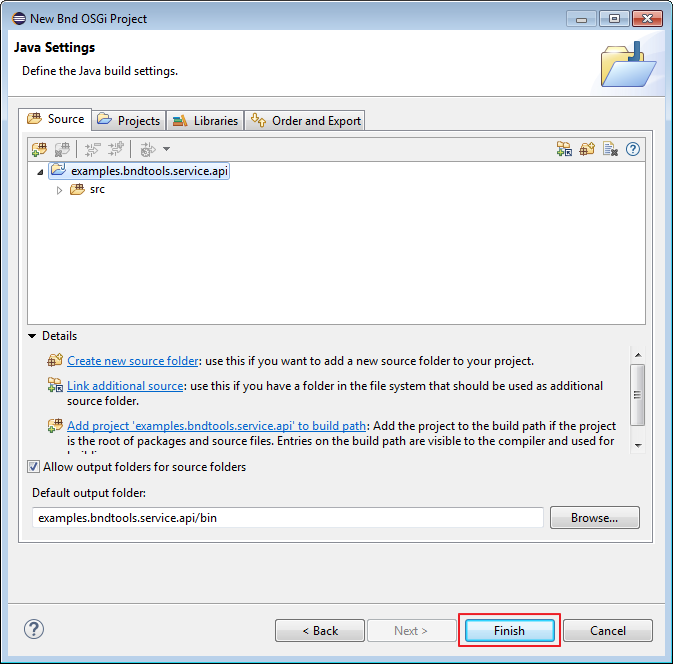
bndtools - update API interface
- delete the Example*Interface.java files in the package
- copy the following snippet and paste it into src folder
package examples.service.api;
public interface StringModifier {
String modify(String input);
}
bndtools - adding additional Manifest properties
- Inside the Bnd Editor on the Source Tab add
Bundle-Name: Example Service API
bndtools - investigate generated bundle
- you successfully created the Service API Bundle
- investigate
<prj>/generatedfolder
bndtools - create implementation project
File -> New -> Bnd OSGi ProjectSelect Component Development 3.3.0- Project and Java Package Name:
examples.bndtools.impl.inverter
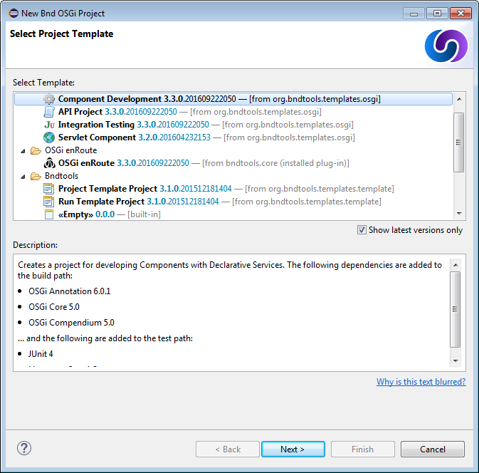
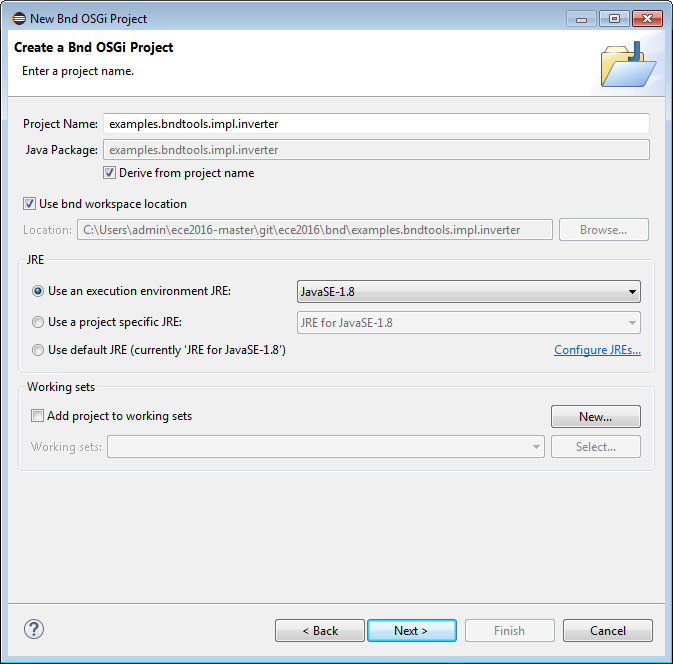
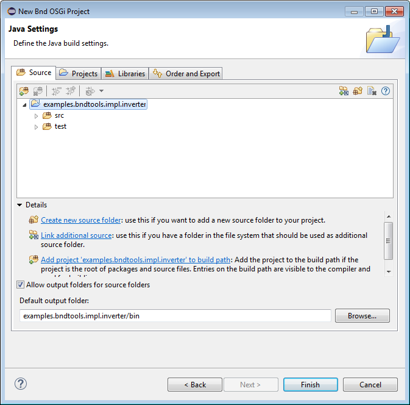
bndtools - define dependencies / build path
- Inside Bnd Editor on the Build Tab
- add to the Build Path
examples.bndtools.service.api
bndtools - implementation
- delete the Example.java files in the package
- copy the following snippet and paste it into src folder
package examples.bndtools.impl.inverter;
import org.osgi.service.component.annotations.*;
import examples.service.api.StringModifier;
@Component
public class StringInverterImpl implements StringModifier {
@Override
public String modify(String input) {
return new StringBuilder(input).reverse().toString();
}
}
bndtools - investigate generated bundle
- you successfully created the impl bundle it looks like this
bndtools - create consumer project
File -> New -> Bnd OSGi ProjectSelect Component Development 3.3.0- Project and Java Package Name:
examples.bndtools.command
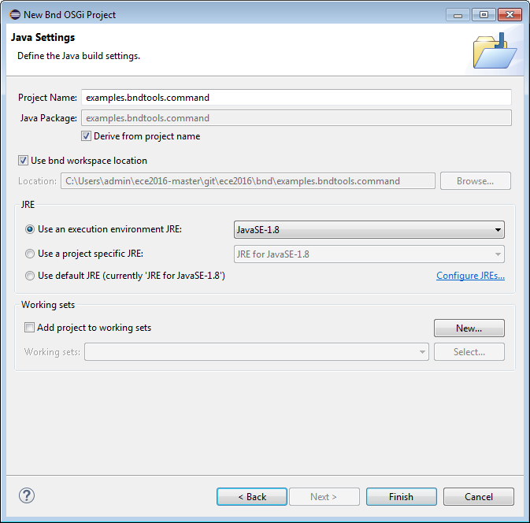
bndtools - define dependencies / build path
- Inside Bnd Editor on the Build Tab
- add to the Build Path
examples.bndtools.service.api
 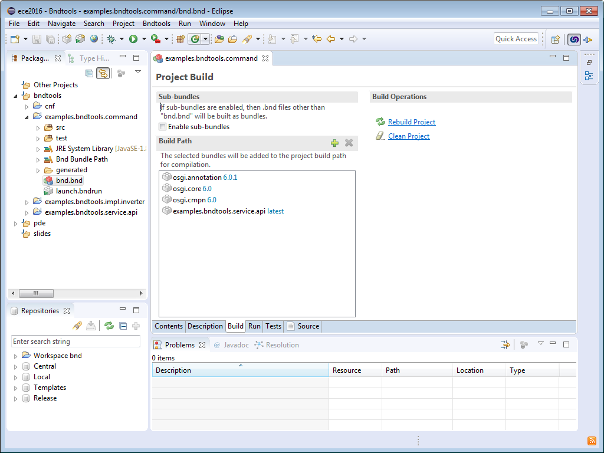
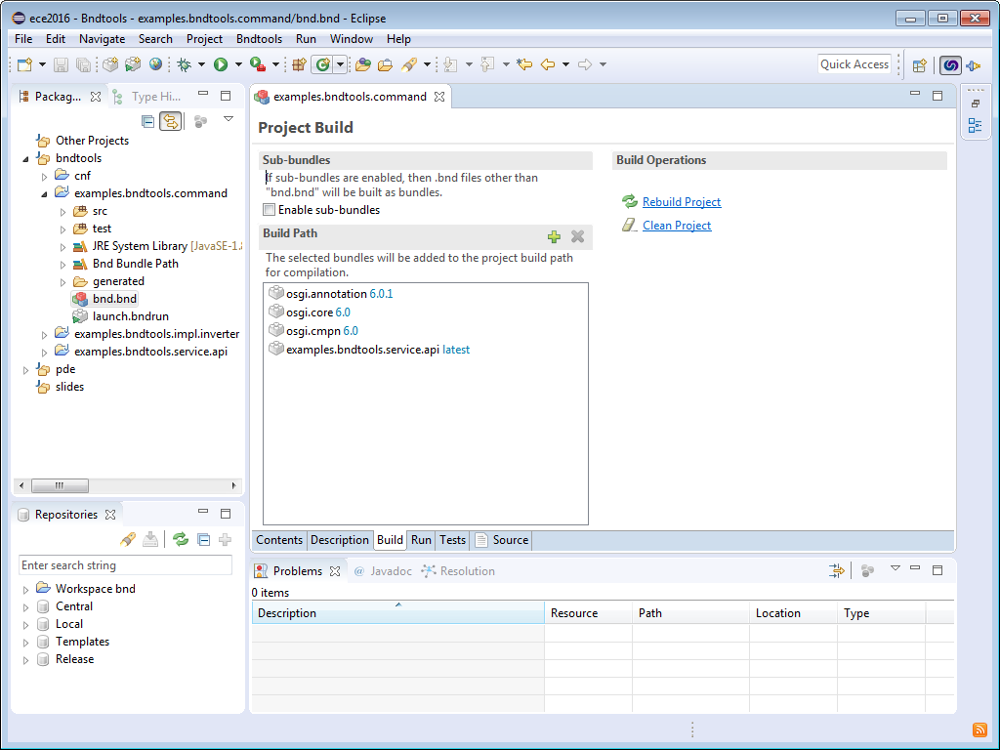
bndtools - consumer implementation
- delete the Example.java files in the package
- copy the following snippet and paste it into src folder
package examples.bndtools.command;
import org.osgi.service.component.annotations.*;
import examples.service.api.StringModifier;
@Component(
property = {
"osgi.command.scope" + "=zExampleModifier",
"osgi.command.function" + "=modify" },
service = StringModifierCommand.class
)
public class StringModifierCommand {
@Reference
private StringModifier modifier;
public void modify(String message) {
System.out.println(modifier.modify(message));
}
} bndtools - investigate generated bundle
- consumer bundle is successfully created if it looks like this
bndtools - Launch from IDE - prepare
- Open the file
launch.bndrunfrom projectexamples.bndtools.commands - Select OSGi Framework
org.apache.felix.framework;version='[5.4.0,5.4.0]' - Select Execution Environment:
JavaSE-1.8 - In the Run Requirements add the following bundles
bundle purpose examples.pde.command application service consumer examples.pde.impl.inverter application service implementation examples.pde.service.api application service api org.apache.felix.configadmin Apache Configuration Admin only required due to bug in Apache Felix SCR 2.0.6 org.apache.felix.metatype Apache OSGi Metatype Service only required due to bug in Apache Felix SCR 2.0.6 
bndtools - Launch from IDE - resolve
- press the resolve button 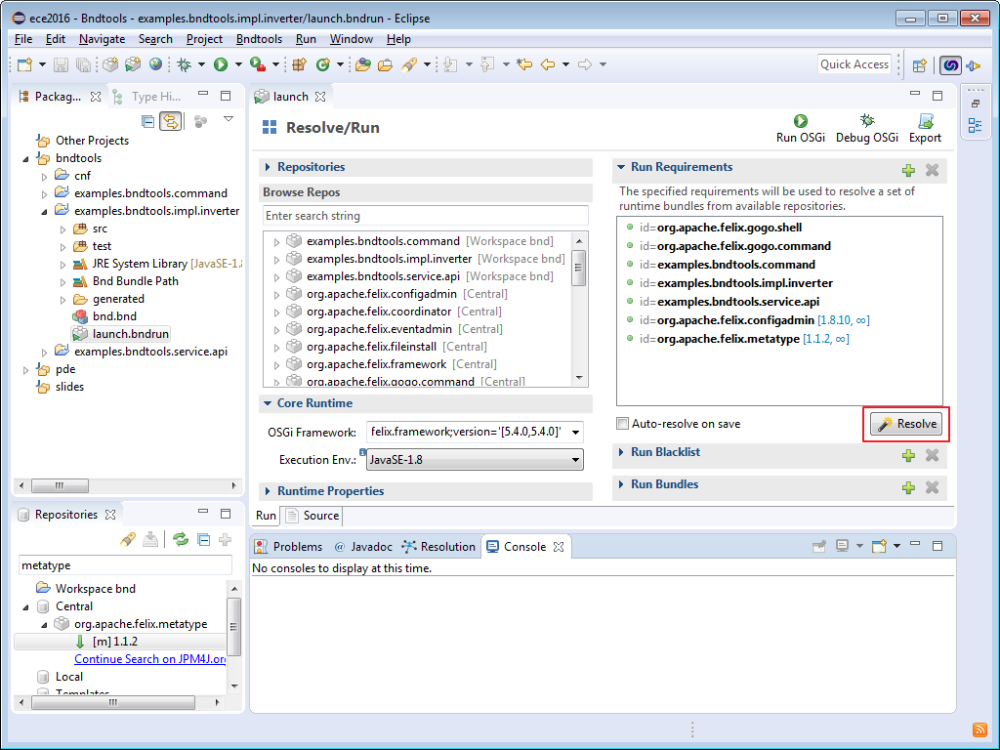 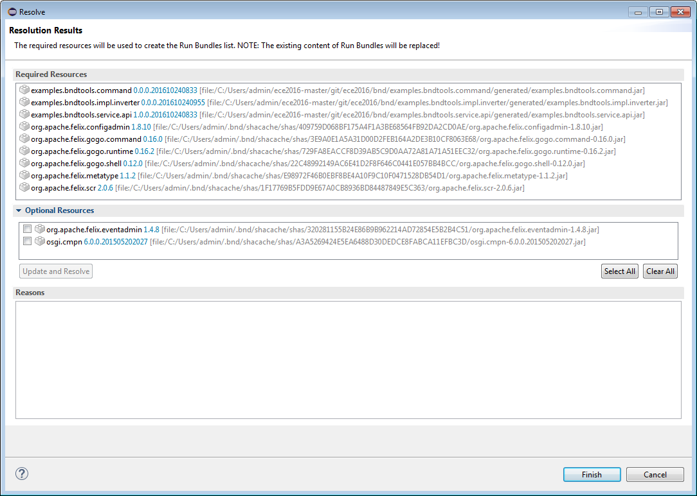
bndtools - Launch from IDE - run
- you can now launch this config via button
"Run OSGi" - enter into the console
modify example
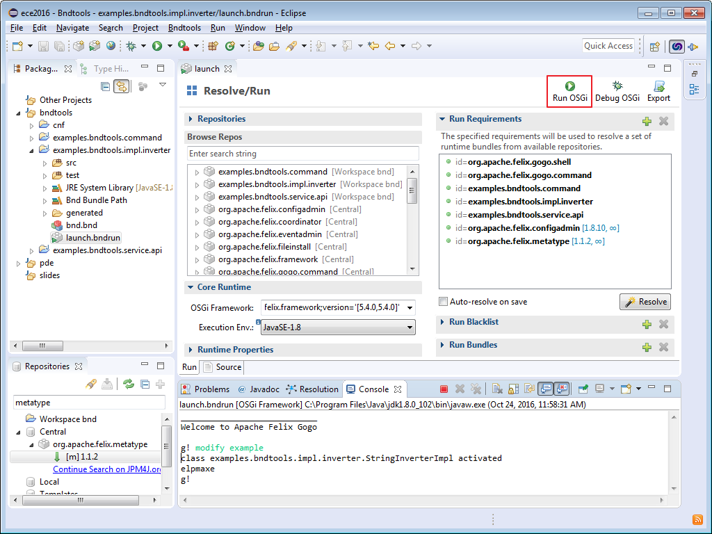
bndtools - export "MegaJar"
- start export via button
Exporton the top-right - select executable jar
- Export to JAR:
C:\ece2016\inverter.jar
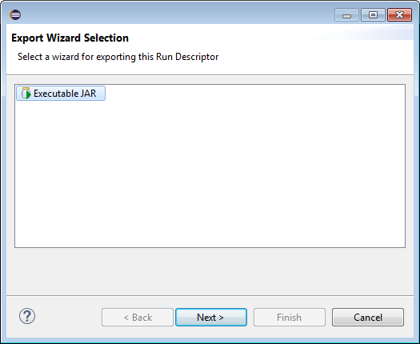
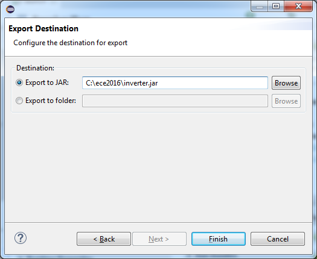
bndtools - run standalone "MegaJar"
- open a cmd/shell window inside
C:\ece2016 - launch
java -jar inverter.jar - type in the console
modify example
Excercise 2 - Lifecycle Methods
- Add
@Activateand@Deactivatemethods to
StringInverterImplandStringModifierCommand
@Activate
void activate() {
System.out.println(this.getClass() + " activated");
}
@Deactivate
void deactivate() {
System.out.println(this.getClass() + " deactivated");
}
Excercise 2 - Explore OSGi console
- Execute in OSGi shell and inspect the behaviour
Description Equinox in PDE Felix in bndtools List all components to see state and component id listscr:listExecute the modify command to activate the components and check the console output modify testmodify testList all components again to verify the state change listscr:listDisable StringInverterImpl and check the console output dis <compID>scr:disable examples.bndtools.
impl.inverter.StringInverterImplList all components again to verify the state change listscr:listEnable StringInverterImpl and check the console output en <compID>scr:enable examples.bndtools.
impl.inverter.StringInverterImplList all components again to verify the state change listscr:list
PDE - create project for Configurable Component
- select from menu:
File -> New -> Plug-in Project - Project name:
examples.pde.impl.configurable
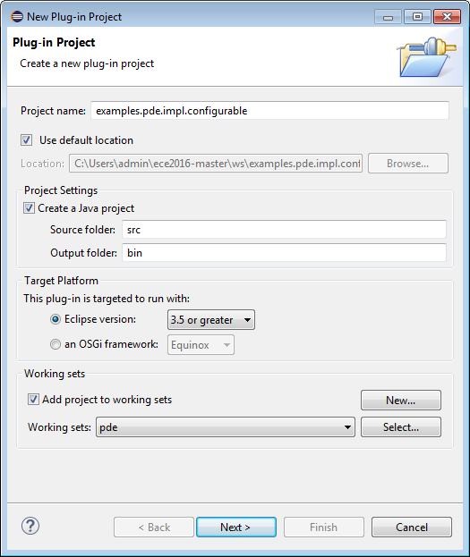
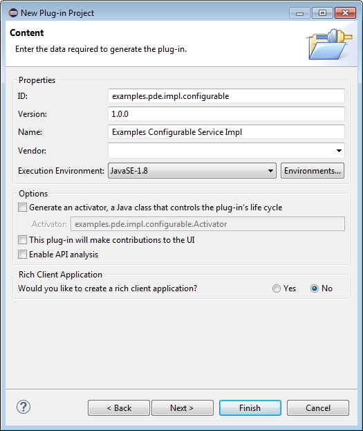
PDE - define dependencies / build path
- Import package:
examples.service.api - Specify the upper bound version:
2.0.0 - Import package:
org.osgi.service.component.annotations - Specify resolution:
optional
PDE - define component properties for DS < 1.3
copy the following snippet and paste it into src folder
package examples.pde.impl.configurable;
public interface Constants {
String PREFIX = "prefix";
String SUFFIX = "suffix";
String ITERATION = "iteration";
String UPPER_CASE = "uppercase";
}
PDE - Implementation Configurable Component
if you did not implemented it yourself, copy the following snippet and paste it into src folder
package examples.pde.impl.configurable;
import java.util.Map;
import org.osgi.service.component.annotations.*;
import examples.service.api.StringModifier;
@Component(
configurationPid="manipulator",
configurationPolicy=ConfigurationPolicy.REQUIRE
)
public class StringManipulator implements StringModifier {
Map<String, Object> config;
@Activate
void activate(Map<String, Object> config) {
System.out.println(this.getClass() + " activated");
this.config = config;
}
@Modified
void modified(Map<String, Object> config) {
this.config = config;
}
public void deactivate() {
System.out.println(this.getClass() + " de-activated");
}
@Override
public String modify(String input) {
String prefix = (String) config.getOrDefault(Constants.PREFIX, "");
String suffix = (String) config.getOrDefault(Constants.SUFFIX, "");
Integer iteration = (Integer) config.getOrDefault(Constants.ITERATION, Integer.valueOf(1));
Boolean upperCase = (Boolean) config.getOrDefault(Constants.UPPER_CASE, Boolean.FALSE);
StringBuilder builder = new StringBuilder();
builder.append(prefix);
for (int i = 0; i < iteration; i++) {
builder.append(upperCase ? input.toUpperCase() : input);
}
builder.append(suffix);
return builder.toString();
}
}
PDE - Configuration Command
if you did not implemented it yourself, copy the following snippet and paste it into src folder
package examples.pde.impl.configurable;
import java.io.IOException;
import java.util.Dictionary;
import java.util.Hashtable;
import org.osgi.service.cm.Configuration;
import org.osgi.service.cm.ConfigurationAdmin;
import org.osgi.service.component.annotations.Component;
import org.osgi.service.component.annotations.Reference;
@Component(
property = {
"osgi.command.scope:String=zExamplesModifier",
"osgi.command.function:String=config"
},
service = ConfigCommand.class)
public class ConfigCommand {
ConfigurationAdmin cm;
@Reference
void setConfigAdmin(ConfigurationAdmin cm) {
this.cm = cm;
}
public void config(String key, String value) throws IOException {
if (Constants.PREFIX.equals(key) || Constants.SUFFIX.equals(key)) {
Configuration config = cm.getConfiguration("manipulator");
Dictionary<String, Object> props = null;
if (config != null && config.getProperties() != null) {
props = config.getProperties();
} else {
props = new Hashtable<>();
}
props.put(key, value);
config.update(props);
} else {
System.err.println("invalid key to value mapping");
}
}
public void config(String key, Integer value) throws IOException {
if (Constants.ITERATION.equals(key)) {
Configuration config = cm.getConfiguration("manipulator");
Dictionary<String, Object> props = null;
if (config != null && config.getProperties() != null) {
props = config.getProperties();
} else {
props = new Hashtable<>();
}
props.put(key, value);
config.update(props);
} else {
System.err.println("invalid key to value mapping");
}
}
public void config(String key, Boolean value) throws IOException {
if (Constants.UPPER_CASE.equals(key)) {
Configuration config = cm.getConfiguration("manipulator");
Dictionary<String, Object> props = null;
if (config != null && config.getProperties() != null) {
props = config.getProperties();
} else {
props = new Hashtable<>();
}
props.put(key, value);
config.update(props);
} else {
System.err.println("invalid key to value mapping");
}
}
}
PDE - Update StringModifierCommand
if you did not implemented it yourself, copy the following snippet and paste it into src folder
package examples.pde.command;
import java.util.*;
import org.osgi.service.component.annotations.*;
import examples.service.api.StringModifier;
@Component(
property = {
"osgi.command.scope:String=zExampleModifier",
"osgi.command.function:String=modify"
},
service = StringModifierCommand.class
)
public class StringModifierCommand {
private List<StringModifier> modifier = new ArrayList<>();
@Activate
void activate() {
System.out.println(this.getClass() + " activated");
}
@Deactivate
void deactivate() {
System.out.println(this.getClass() + " deactivated");
}
@Reference(
cardinality=ReferenceCardinality.AT_LEAST_ONE
)
void bindStringModifier(StringModifier modifier) {
this.modifier.add(modifier);
}
void unbindStringModifier(StringModifier modifier) {
this.modifier.remove(modifier);
}
void updatedStringModifier(StringModifier modifier, Map<String, Object> properties) {
System.out.println(modifier.getClass() + " configuration updated");
properties.forEach((key, value) -> System.out.println(key + " = " + value));
}
public void modify(String input) {
modifier.forEach(m -> System.out.println(m.modify(input)));
}
}
PDE - Launch in IDE
- copy an existing Run Configuration and name it
configurable_runtime - add the following bundles:
bundle purpose examples.pde.impl.configurable Application Bundle org.eclipse.equinox.cm Equinox Configuration Admin Service org.eclipse.equinox.metatype Equinox Metatype Service - run
- execute in console:
config uppercase true - execute in console:
modify test - verify the result
PDE - Optional exercise 1/2
- stop the
examples.pde.impl.configurablebundle - verify that the
StringModifierCommandgets deactivated - stop the
examples.pde.impl.configurablebundle - change the
StringModifierreference to dynamic@Reference( cardinality=ReferenceCardinality.AT_LEAST_ONE, policy=ReferencePolicy.DYNAMIC ) void bindStringModifier(StringModifier modifier) { this.modifier.add(modifier); }
PDE - Optional exercise 2/2
- start the application
- stop the
examples.pde.impl.configurablebundle - verify that the
StringModifierCommandis not deactivated
bndtools - create project for configurable component
File -> New -> Bnd OSGi ProjectSelect API Project 3.3.0- Project Name:
examples.bndtools.impl.configurable
 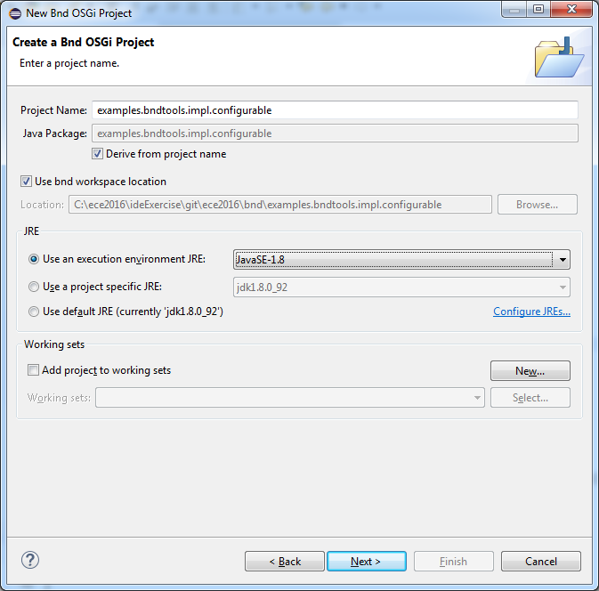
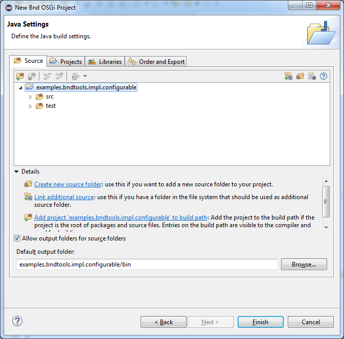
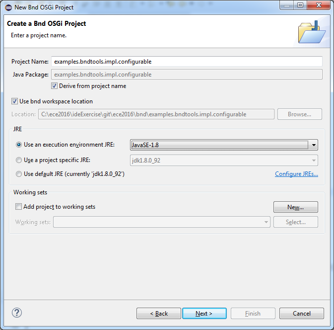
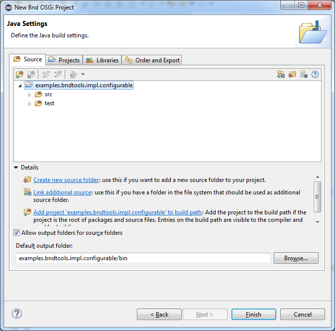
bndtools - define dependencies / build path
- Inside Bnd Editor on the Build Tab
- add to the Build Path
examples.bndtools.service.api
bndtools - Implementation Configurable comp.
- delete the Example.java files in the package
- copy the following snippet and paste it into src folder
package examples.bndtools.impl.configurable;
import org.osgi.service.component.annotations.*;
import org.osgi.service.metatype.annotations.Designate;
import org.osgi.service.metatype.annotations.ObjectClassDefinition;
import examples.service.api.StringModifier;
@ObjectClassDefinition(name = "StringManipulator Configuration")
@interface StringManipulatorConfig {
String prefix() default "";
String suffix() default "";
int repeat() default 1;
boolean uppercase() default false;
}
@Component(
configurationPid = "manipulator",
configurationPolicy = ConfigurationPolicy.REQUIRE
)
@Designate(ocd = StringManipulatorConfig.class)
public class StringManipulator implements StringModifier {
StringManipulatorConfig config;
@Activate
void activate(StringManipulatorConfig config) {
System.out.println(this.getClass() + " activated");
this.config = config;
}
@Modified
void modified(StringManipulatorConfig config) {
this.config = config;
}
public void deactivate() {
System.out.println(this.getClass() + " de-activated");
}
@Override
public String modify(String input) {
String prefix = config.prefix();
String suffix = config.suffix();
Integer iteration = config.repeat();
Boolean upperCase = config.uppercase();
StringBuilder builder = new StringBuilder();
builder.append(prefix);
for (int i = 0; i < iteration; i++) {
builder.append(upperCase ? input.toUpperCase() : input);
}
builder.append(suffix);
return builder.toString();
}
}
bndtools - Update StringModifierCommand
if you did not implemented it yourself, copy the following snippet and paste it into src folder
package examples.bndtools.command;
import java.util.*;
import org.osgi.service.component.annotations.*;
import examples.service.api.StringModifier;
@Component(
property = {
"osgi.command.scope:String=zExampleModifier",
"osgi.command.function:String=modify"
},
service = StringModifierCommand.class
)
public class StringModifierCommand {
private List<StringModifier> modifier = new ArrayList<>();
@Activate
void activate() {
System.out.println(this.getClass() + " activated");
}
@Deactivate
void deactivate() {
System.out.println(this.getClass() + " deactivated");
}
@Reference(
cardinality=ReferenceCardinality.AT_LEAST_ONE
)
void bindStringModifier(StringModifier modifier) {
this.modifier.add(modifier);
}
void unbindStringModifier(StringModifier modifier) {
this.modifier.remove(modifier);
}
void updatedStringModifier(StringModifier modifier, Map<String, Object> properties) {
System.out.println(modifier.getClass() + " configuration updated");
properties.forEach((key, value) -> System.out.println(key + " = " + value));
}
public void modify(String input) {
modifier.forEach(m -> System.out.println(m.modify(input)));
}
}
bndtools - Launch from IDE - prepare 1/3
- Open the file
launch.bndrunfrom projectexamples.bndtools.impl.configurable - Select OSGi Framework
org.apache.felix.framework;version='[5.4.0,5.4.0]' - Select Execution Environment:
JavaSE-1.8 - In the Run Requirements add the following bundles
bundle purpose examples.bndtools.service.commdn application service consumer examples.bndtools.impl.inverter application service implementation examples.bndtools.impl.configurable application service configurable implementation examples.bndtools.service.api application service api
bndtools - Launch from IDE - prepare 2/3
- In the Run Requirements add the following bundles
bundle purpose org.apache.felix.gogo.shell Gogo OSGi shell org.apache.felix.gogo.command Gogo OSGi commands org.apache.felix.webconsole Webconsole org.apache.felix.webconsole.plugins.ds Webconsole Plugin
Run OSGi
* open a Webbrowser on URL: http://localhost:8080/system/console
* enter Webconsole credentials (user and password: admin)
* navigate to OSGi -> Configuration
* provide a StringManipulator Configuration
* enter in the console modify example
bndtools - export "MegaJar"
- start export via button
Exporton the top-right - select executable jar
- Export to JAR:
C:\ece2016\webconsole.jar
bndtools - run standalone "MegaJar"
- open a cmd/shell window inside
C:\ece2016 - launch
java -jar webconsole.jar - open a Webbrowser: localhost:8080/system/console
- enter Webconsole credentials (user and password: admin)
- navigate to
OSGi -> Configuration - provide a
StringManipulator Configuration - type in the console
modify example

PDE - Launch from IDE with Webconsole 1/2
- copy an existing Run Configuration and name it
webconsole - add the following bundles:
bundle purpose javax.servlet Servlet API org.apache.felix.webconsole Apache Felix Webconsole (all) org.eclipse.equinox.http.jetty Equinox OSGi Http Service org.eclipse.equinox.http.servlet Equinox OSGi Http Service org.eclipse.jetty.continuation Eclipse Jetty org.eclipse.jetty.http Eclipse Jetty org.eclipse.jetty.io Eclipse Jetty org.eclipse.jetty.security Eclipse Jetty org.eclipse.jetty.server Eclipse Jetty org.eclipse.jetty.servlet Eclipse Jetty org.eclipse.jetty.util Eclipse Jetty
http_jetty_webconsole_bundles.zip into e.g. *C:\ece2016\equinox_oxygen_runtime*
* start the application with the start_jetty.[bat|sh] script
* open a Webbrowser on URL: http://localhost:8888/system/console
* enter Webconsole credentials
* user: admin
* password: admin
* **Not working? - see next slide**
Remote Service properties
Modify the StringManipulator and add the necessary Remote Service Admin properties
@Component(
configurationPid="manipulator",
configurationPolicy=ConfigurationPolicy.REQUIRE,
property= { "service.exported.interfaces=*",
"service.exported.configs=ecf.generic.server" }
)
public class StringManipulator implements StringModifier {
Launch from IDE with RSA 1/2 - host
- copy existing Run Configuration
configurable_runtimeand name itecf_host_config - add the following bundles:
bundle purpose javax.servlet Servlet API org.eclipse.core.jobs Eclipse / Equinox Concurrency org.eclipse.equinox.common Eclipse / Equinox Concurrency org.eclipse.equinox.concurrent Eclipse / Equinox Concurrency org.eclipse.equinox.event Eclipse / Equinox Event Admin
Launch from IDE with RSA 2/2 - host
- additionally add the following bundles from Eclipse Communication Framework
- org.eclipse.ecf
- org.eclipse.ecf.discovery
- org.eclipse.ecf.identity
- org.eclipse.ecf.osgi.services.distribution
- org.eclipse.ecf.osgi.services.remoteserviceadmin
- org.eclipse.ecf.osgi.services.remoteserviceadmin.proxy
- org.eclipse.ecf.provider
- org.eclipse.ecf.provider.jmdns
- org.eclipse.ecf.provider.remoteservice
- org.eclipse.ecf.remoteservice
- org.eclipse.ecf.remoteservice.asyncproxy
- org.eclipse.ecf.remoteservice.eventadmin
- org.eclipse.ecf.sharedobject
- org.eclipse.osgi.services.remoteserviceadmin
Launch in standalone runtime - Equinox/PDE
- extract the provided archive
ecf_rsa_bundles.zipto the plugins directory of the created runtime e.g. C:\ece2016\equinox_oxygen_runtime - export bundles via
File -> Export… -> Plug-in Development -> Deployable plug-ins and fragments - press
Next - select the created example bundles:
examples.pde.* - select the runtime directory (e.g. C:\ece2016\equinox_oxygen_runtime)
- press
Finish
start the application with the start script:
start_jetty.[bat|sh]
Launch in standalone runtime - Equinox
- export bundles via
File -> Export… -> Plug-in Development -> Deployable plug-ins and fragments - press
Next - select the created example bundles:
examples.pde.* - select the runtime directory (e.g. C:\ece2016\equinox_oxygen_runtime)
- press
Finish
start the application with the start script:
start_jetty.[bat|sh]